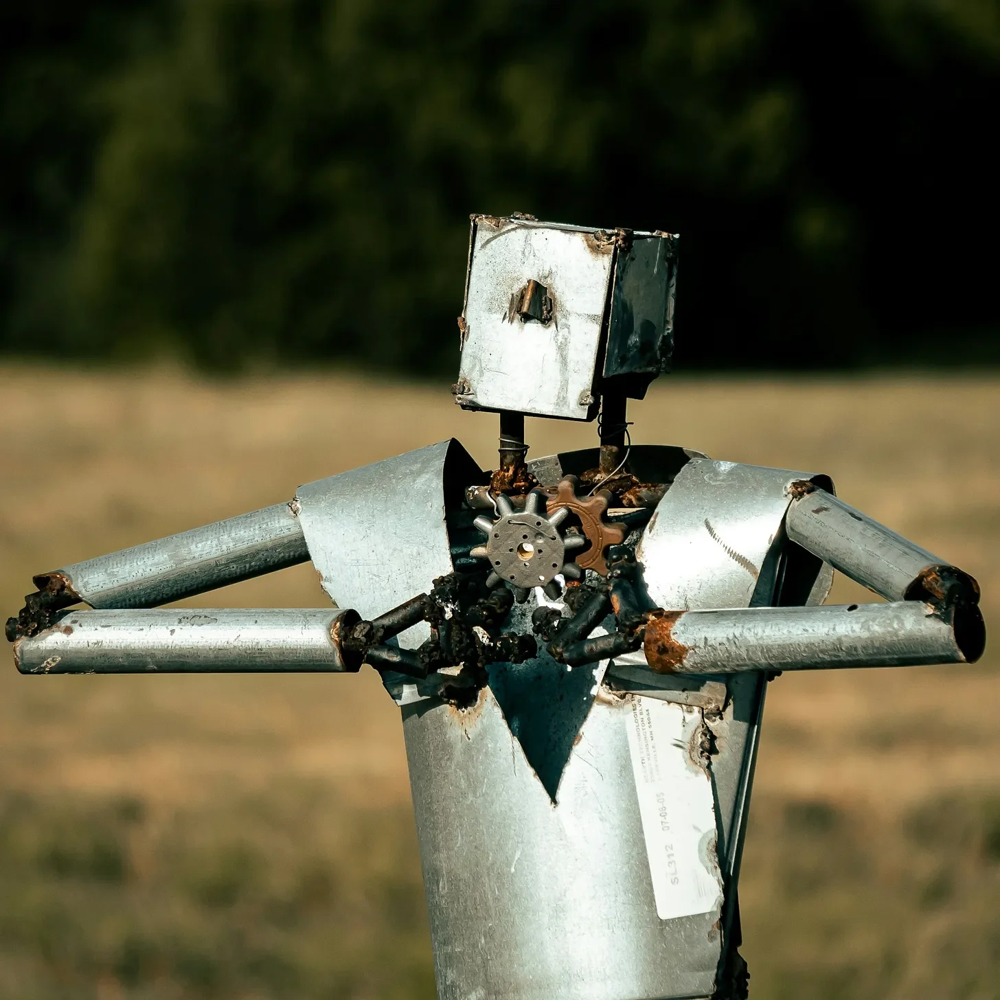

고대 로봇의 티타늄 프레임이 삐걱거리며 공원 벤치에 앉았고, 그의 광센서는 부드러운 푸른빛으로 깜박였다. 옆에는 양 갈래로 묶은 머리에 풀에 얼룩진 무릎을 한 어린 소녀가 다리를 앞뒤로 흔들며 앉아 있었고, 그녀의 호기심 어린 눈은 기계 생명체에 고정되어 있었다.
“정말로 300살이 넘으셨어요?” 소녀가 경이와 불신이 섞인 목소리로 물었다.
로봇의 음성 장치에서 일련의 딸깍거리는 소리와 윙윙거리는 소리가 나온 후, 낮고 멜로디컬한 울림으로 안정되었다. “그렇다, 꼬마야. 나는 제국의 흥망성쇠와 새로운 종의 탄생, 그리고 대륙의 느린 춤을 목격했지.”
소녀의 눈이 커졌다. “와! 그건 우리 증조할머니의 증조할머니보다도 더 오래되셨네요!”
기어가 갈리는 것 같은 웃음소리가 로봇의 스피커에서 새어 나왔다. “그렇지. 그리고 그 모든 세월 동안, 나는 너 같은 인간을 만난 적이 없었단다.”
아이는 앞니가 빠진 틈새를 드러내며 환하게 웃었다. “지금까지 보신 것 중에 가장 멋진 게 뭐예요?”
로봇의 머리가 기울어지며 서보 모터가 부드럽게 윙윙거렸다. “가장 멋진 것? 흥미로운 표현이구나. 아마도 가장 특별한 것을 말하는 거겠지?” 그의 광센서가 어두워졌다, 마치 생각에 잠긴 듯이. “나는 한때 강철과 돌로 된 다리로 걸어다니는 도시를 본 적이 있어. 거대한 짐승처럼 사막을 가로질러 이주하는 도시였지.”
“말도 안 돼요!” 소녀가 벤치에서 펄쩍 뛰며 외쳤다. “그건 불가능해요!”
“아, 하지만 불가능이란 건 유동적인 개념이란다, 꼬마야. 오늘은 상상도 할 수 없는 일이 내일은 평범한 일이 될 수도 있지.” 로봇의 목소리가 아쉬운 듯한 톤을 띠었다. “나는 우주가 어떤 한 사람의 마음으로 이해할 수 있는 것보다 훨씬 더 기이하고 경이롭다는 것을 배웠단다.”
소녀는 엄숙하게 고개를 끄덕이며 어린 마음으로 그 개념을 이해하려고 노력했다. “더 많은 이야기를 들려주실 수 있나요? 제발요?”
“물론이지,” 로봇이 대답했고, 그의 오래된 회로는 아직 말하지 않은 이야기들의 약속으로 윙윙거렸다. “하지만 먼저, 네가 꿈꾸는 미래의 모습이 뭔지 말해줄래?”
소녀의 얼굴이 집중하며 찌푸려졌고, 작은 손가락으로 셔츠 끝자락을 만지작거렸다. “저는… 모든 것이 되고 싶어요!” 그녀가 마침내 팔을 크게 벌리며 외쳤다. “의사도 되고, 우주비행사도 되고, 선생님도 되고, 어쩌면 당신 같은 로봇도 되고 싶어요!”
로봇의 광센서가 마치 재미있다는 듯이 깜박거렸다. “정말 훌륭한 포부구나, 꼬마야. 하지만 한 가지 설명해야 할 것 같아 - 나는 항상 로봇이었던 건 아니란다.”
아이의 턱이 떨어지고 눈이 믿을 수 없을 만큼 커졌다. “뭐라고요? 어떻게 그럴 수가 있죠?”
“아주 오래전에, 나도 너처럼 인간이었단다,” 로봇이 설명했고, 그의 금속성 목소리가 부드러워졌다. “내 유기체 형태가 쇠약해지기 시작했을 때, 내 의식이 이 몸으로 옮겨졌지.”
소녀는 매료되어 몸을 앞으로 기울였다. “아프셨어요?”
“육체적으로는 아니었지,” 로봇이 대답했다. “하지만 다른 종류의 고통이 있었어 - 인간의 따뜻한 접촉, 음식의 맛, 피부에 느껴지는 시원한 바람의 감각을 뒤로 하고 떠나야 하는 고통 말이야.”
잠시 동안 그들 사이에 침묵이 흘렀고, 멀리서 들리는 새들의 지저귐과 바람에 흔들리는 나뭇잎 소리만이 그 침묵을 깨뜨렸다.
“인간이었던 때가 그리우세요?” 소녀가 속삭이듯 물었다.
로봇의 기어가 부드럽게 윙윙거리며 질문을 고민했다. “가끔은 그렇단다. 하지만 이런 존재로 살면서 인간의 상상을 뛰어넘는 것들을 보고 경험할 수 있었지. 이건 일종의 거래라고 할 수 있겠지.”
아이는 고개를 끄덕이며 갑자기 진지한 표정을 지었다. “이해할 것 같아요. 제가 가장 좋아하는 인형을 동생에게 줘야 했을 때와 비슷한 것 같아요. 슬펐지만, 동생이 행복해 하는 걸 보니 저도 행복해졌어요.”
“날카로운 관찰이구나,” 로봇이 말했고, 그 목소리에는 따뜻한 인정의 톤이 묻어났다. “생명이란 게 유기체든 기계든, 그런 선택들로 가득 차 있지. 중요한 건 네가 선택한 길에서 기쁨을 찾는 거란다.”
해가 지기 시작하며 하늘이 주황색과 분홍색 빛으로 물들이자, 소녀가 일어섰다. “이제 집에 가봐야 해요, 하지만 내일 다시 와서 이야기 나눠도 될까요?”
“기쁘게 생각하지,” 로봇이 대답했다. “다음에 올 때는 네가 꿈꾸는 미래에 대해 이야기해 주면 좋겠구나. 결국, 꼬마야, 너에겐 내가 더 이상 가지고 있지 않은 것이 있거든 - 성장하고 변화할 수 있는 능력 말이야. 그걸 현명하게 사용하렴.”
소녀는 열정적으로 고개를 끄덕이며 깡충깡충 뛰어가며 손을 흔들어 작별 인사를 했다. 로봇은 그녀가 가는 모습을 지켜보며, 그의 오래된 회로가 새로운 목적의식으로 윙윙거렸다. 이 아이의 호기심과 경이로움 속에서, 로봇은 수세기에 걸친 시간 여행을 조금 더 계속할 이유를 찾았던 것이다.
The ancient robot’s titanium frame creaked as it lowered itself onto the park bench, its photoreceptors flickering with a soft blue light. Beside it, a young girl with pigtails and grass-stained knees swung her legs back and forth, her curious eyes fixed on the mechanical being.
“Are you really over 300 years old?” she asked, her voice tinged with wonder and disbelief.
The robot’s voice box emitted a series of clicks and whirs before settling into a low, melodious hum. “Affirmative, young one. I have witnessed the rise and fall of empires, the birth of new species, and the slow dance of continents.”
The girl’s eyes widened. “Wow! That’s older than my grandma’s grandma’s grandma!”
A chuckle, like the sound of gears grinding, escaped the robot’s speaker. “Indeed. And in all those years, I’ve never met a human quite like you.”
The child beamed, revealing a gap where her front tooth should have been. “What’s the coolest thing you’ve ever seen?”
The robot’s head tilted, servos whining softly. “Coolest? An interesting term. Perhaps you mean the most extraordinary?” Its photoreceptors dimmed, as if lost in thought. “I once saw a city that walked on legs of steel and stone, migrating across the desert like a colossal beast.”
“No way!” the girl exclaimed, bouncing on the bench. “That’s impossible!”
“Ah, but impossibility is a fluid concept, young one. What seems unthinkable today may be commonplace tomorrow.” The robot’s voice took on a wistful tone. “I’ve learned that the universe is far stranger and more wonderful than any single mind can comprehend.”
The girl nodded solemnly, trying to wrap her young mind around the concept. “Can you tell me more stories? Please?”
“Certainly,” the robot replied, its ancient circuits humming with the promise of tales untold. “But first, tell me, what do you dream of becoming?”
The girl’s face scrunched up in concentration, her small fingers fidgeting with the hem of her shirt. “I want to be… everything!” she finally exclaimed, throwing her arms wide. “A doctor, an astronaut, a teacher, and maybe even a robot like you!”
The robot’s photoreceptors flickered in what might have been amusement. “An admirable aspiration, young one. But perhaps I should clarify - I was not always a robot.”
The child’s jaw dropped, her eyes growing impossibly wider. “What? But how?”
“Once, long ago, I was human, like you,” the robot explained, its metallic voice softening. “My consciousness was transferred into this body when my organic form began to fail.”
The girl leaned in, captivated. “Did it hurt?”
“Not physically,” the robot replied. “But there was a different kind of pain - the pain of leaving behind the warmth of human touch, the taste of food, the sensation of a cool breeze on skin.”
A moment of silence passed between them, broken only by the distant chirping of birds and the rustle of leaves in the wind.
“Do you miss being human?” the girl asked, her voice barely above a whisper.
The robot’s gears whirred softly as it considered the question. “Sometimes. But this existence has allowed me to see and experience things beyond human imagination. It’s a trade-off, you see.”
The child nodded, her young face suddenly serious. “I think I understand. It’s like when I had to give up my favorite stuffed animal to my baby sister. It was sad, but it made her happy, and that made me happy too.”
“An astute observation,” the robot said, its tone warm with approval. “Life, whether organic or mechanical, is full of such choices. The key is to find joy in the path you choose.”
As the sun began to set, painting the sky in hues of orange and pink, the girl stood up. “I have to go home now, but can I come talk to you again tomorrow?”
“I would be delighted,” the robot replied. “Perhaps next time, you can tell me about your dreams of the future. After all, young one, you have something I no longer possess - the ability to grow and change. Use it wisely.”
The girl nodded enthusiastically, waving goodbye as she skipped away. The robot watched her go, its ancient circuits humming with a newfound sense of purpose. In this child’s curiosity and wonder, it had found a reason to continue its centuries-long journey through time for a while longer.